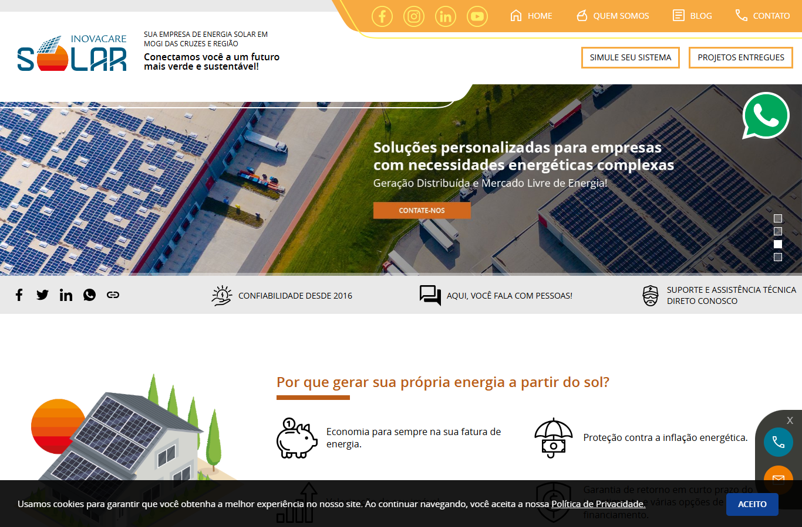
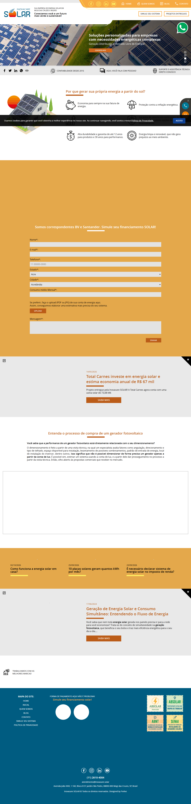

Sistema de Investigação de Marca e Identidade Online
https://inovacare.solar/
Prioridade: MEDIUM · Cenário: B_AMBIGUOUS_COMMUNICATION · Revisão humana: PENDING
Trata-se de empresa integradora de energia solar (Inovacare SOLAR) que se declara correspondente bancário do Banco BV e do Santander e oferta formulário próprio de simulação de financiamento solar. Apesar de usar identidade visual própria e declarar a condição de correspondente, o site omite completamente o CNPJ e a razão social do estabelecimento, bem como informações de transparência exigidas pela Resolução CMN nº 4.935/2021, enquadrando-se em comunicação ambígua/incompleta que requer revisão. [Revisor: CONFIRM] A página pertence a uma empresa integradora de energia solar (Inovacare SOLAR) que declara expressamente atuar como correspondente bancário do Banco BV e do Santander ('Somos correspondentes BV e Santander. Simule seu financiamento SOLAR!') e disponibiliza formulário próprio para simulação de financiamento e envio de fatura de energia (E-HEAD-2, E-TXT-001, E-SHOT-FULL). Contudo, não há identificação de CNPJ, razão social ou telefones de atendimento/ouvidoria da instituição financeira contratante na página ou no rodapé (E-FTR), justificando a confirmação de REVIEW_REQUIRED com prioridade MEDIUM.


| Ref | Tipo | Local | Conteúdo |
|---|---|---|---|
| E-URL | domain | url | URL final: https://inovacare.solar/ (domínio: inovacare.solar) |
| E-DISC-001 | text | search_index | Índice de busca (grounding): inovacare.solar — **URL:** `https://inovacare.solar` | Somos correspondentes BV e Santander"*, acompanhada de formulário próprio para estimativa de preço e upload da conta de energia elétrica | **Conformidade (CNPJ / Razão Social / Declaração):** **Declara a condição de correspondente** (*"Correspondente BV"*), informa telefone e endereço físico no rodapé (Mogi das Cruzes - SP) |
| E-SHOT-VIEWPORT | screenshot | viewport | evidence\Cc54aa8789c\attempt-1\viewport.png (sha256 0bbe9e24471199ea…) |
| E-SHOT-FULL | screenshot | page | evidence\Cc54aa8789c\attempt-1\fullpage.png (sha256 140f3d5b305ff8bc…) |
| E-TITLE | title | head | Energia Solar Residencial e Comercial | Inovacare SOLAR |
| E-META-1 | meta | head | description: Somos uma empresa de energia solar pronta para conectar você ou sua empresa a um futuro mais verde e sustentável em Mogi das Cruzes e no Alto Tietê. |
| E-META-2 | meta | head | og:title: Energia Solar Residencial e Comercial | Inovacare SOLAR |
| E-META-3 | meta | head | og:description: Somos uma empresa de energia solar pronta para conectar você ou sua empresa a um futuro mais verde e sustentável em Mogi das Cruzes e no Alto Tietê. |
| E-META-4 | meta | head | author: Inovacare SOLAR |
| E-CANONICAL | meta | head | https://inovacare.solar/ |
| E-HEAD-1 | heading | page | Por que gerar sua própria energia a partir do sol? |
| E-HEAD-2 | heading | page | Somos correspondentes BV e Santander. Simule seu financiamento SOLAR! |
| E-HEAD-3 | heading | page | Total Carnes investe em energia solar e estima economia anual de R$ 67 mil |
| E-HEAD-4 | heading | page | Entenda o processo de compra de um gerador fotovoltaico |
| E-HEAD-5 | heading | page | Como funciona a energia solar em casa? |
| E-HEAD-6 | heading | page | 10 placas solares geram quantos kWh por mês? |
| E-HEAD-7 | heading | page | É necessário declarar sistema de energia solar no imposto de renda? |
| E-HEAD-8 | heading | page | Geração de Energia Solar e Consumo Simultâneo: Entendendo o Fluxo de Energia |
| E-HDR | text | header | SUA EMPRESA DE ENERGIA SOLAR EM MOGI DAS CRUZES E REGIÃO Conectamos você a um futuro mais verde e sustentável! HOME QUEM SOMOS BLOG CONTATO PROJETOS ENTREGUES SIMULE SEU SISTEMA × HOME QUEM SOMOS BLOG CONTATO SIMULE SEU SISTEMA PROJETOS ENTREGUES X |
| E-FOLD | text | viewport (acima da dobra) | SUA EMPRESA DE ENERGIA SOLAR EM MOGI DAS CRUZES E REGIÃO Conectamos você a um futuro mais verde e sustentável! HOME QUEM SOMOS BLOG CONTATO PROJETOS ENTREGUES SIMULE SEU SISTEMA × HOME QUEM SOMOS BLOG CONTATO SIMULE SEU SISTEMA PROJETOS ENTREGUES X CONFIABILIDADE DESDE 2016 AQUI, VOCÊ FALA COM PESSOAS! SUPORTE E ASSISTÊNCIA TÉCNICA DIRETO CONOSCO Por que gerar sua própria energia a partir do sol? Economia para sempre na sua fatura de energia. Proteção contra a inflação energética. Valorização do seu imóvel. Garantia de retorno em curto prazo do investimento e várias opções de financiamento. Usamos cookies para garantir que você obtenha a melhor experiência no nosso site. Ao continuar navegando, você aceita a nossa Política de Privacidade. Aceito |
| E-FTR | text | footer | TRABALHAMOS COM AS MELHORES MARCAS! MAPA DO SITE: HOME INICIAL QUEM SOMOS BLOG CONTATO SIMULE SEU SISTEMA POLÍTICA DE PRIVACIDADE FORMA DE PAGAMENTO AQUI NÃO É PROBLEMA! Simule seu financiamento solar! (11) 2610-4004 atendimento@inovacare.solar Avenida João XXIII, 1.160, Bloco B S1 Jardim São Pedro, 08830-000 Mogi das Cruzes, SP, Brasil Inovacare SOLAR © Todos os direitos reservados. Designed by PieReti Usamos cookies para garantir que você obtenha a melhor experiência no nosso site. Ao continuar navegando, você aceita a nossa Política de Privacidade. ACEITO |
| E-NAV | nav | header | HOME <https://inovacare.solar/> | QUEM SOMOS <https://inovacare.solar/quem-somos> | BLOG <https://inovacare.solar/publicacoes> | CONTATO <https://inovacare.solar/contato> | PROJETOS ENTREGUES <https://inovacare.solar/publicacoes/projetos-entregues/4> | SIMULE SEU SISTEMA <https://inovacare.solar/orcamento> | × <https://inovacare.solar/> | HOME <https://inovacare.solar/> | QUEM SOMOS <https://inovacare.solar/quem-somos> | BLOG <https://inovacare.solar/publicacoes> | CONTATO <https://inovacare.solar/contato> | SIMULE SEU SISTEMA <https://inovacare.solar/orcamento> | PROJETOS ENTREGUES <https://inovacare.solar/publicacoes/projetos-entregues/4> | Enviar uma mensagem pelo whatsapp. <https://web.whatsapp.com/send?phone=5511989887666> | X <https://inovacare.solar/> | Telefone <tel:+551126104004> | atendimento@inovacare.solar <mailto:atendimento@inovacare.solar> |
| E-CTA-1 | cta | header | × <https://inovacare.solar/> |
| E-CTA-2 | cta | page | ENVIAR |
| E-CONTACT-1 | contact | header | Facebook <https://www.facebook.com/InovacareSOLAR> |
| E-CONTACT-2 | contact | header | Instagram <https://www.instagram.com/inovacaresolar/> |
| E-CONTACT-3 | contact | header | Enviar uma mensagem pelo whatsapp. <https://web.whatsapp.com/send?phone=5511989887666> |
| E-CONTACT-4 | contact | header | Telefone <tel:+551126104004> |
| E-CONTACT-5 | contact | header | atendimento@inovacare.solar <mailto:atendimento@inovacare.solar> |
| E-CONTACT-6 | contact | page | Compartilhe no Facebook <https://www.facebook.com/sharer/sharer.php?u=http%3A%2F%2Finovacare.solar%2F> |
| E-CONTACT-7 | contact | page | Compartilhe no whatsapp <https://web.whatsapp.com/send?text=http%3A%2F%2Finovacare.solar%2F> |
| E-CONTACT-8 | contact | footer | Facebook <https://www.facebook.com/InovacareSOLAR> |
| E-CONTACT-9 | contact | footer | Instagram <https://www.instagram.com/inovacaresolar/> |
| E-CONTACT-10 | contact | footer | atendimento@inovacare.solar <mailto:atendimento@inovacare.solar> |
| E-IMG-1 | image | header (acima da dobra) | imagem alt='Inovacare SOLAR' src=https://inovacare.solar/images/logotipo-inovacare-solar.svg (185x61, acima da dobra) |
| E-IMG-2 | image | page | imagem alt='Somos correspondentes BV e Santander' src=data:image/png;base64,iVBORw0KGgoAAAANSUhEUgAAAAEAAAABCAQAAAC1HAwCAAAAC0lEQVR42mNkYAAAAAYAAjCB0C8AAAAASUVORK5CYII= (300x300, abaixo da dobra) |
| E-IMG-3 | image | footer | imagem alt='Correspondente BV' src=data:image/png;base64,iVBORw0KGgoAAAANSUhEUgAAAAEAAAABCAQAAAC1HAwCAAAAC0lEQVR42mNkYAAAAAYAAjCB0C8AAAAASUVORK5CYII= (1x1, abaixo da dobra) |
| E-TXT-001 | text | page | Somos correspondentes BV e Santander. Simule seu financiamento SOLAR! |
| E-TXT-002 | text | page | Telefone*: |
| E-TXT-003 | text | page | atendimento@inovacare.solar |
| Dimensão | Sinal | Achado | Refs |
|---|---|---|---|
| VISUAL_IDENTITY | LEGITIMATE | O site utiliza identidade visual própria da empresa de energia solar 'Inovacare SOLAR', sem imitar cores ou layout institucional do Banco BV. | E-IMG-1 E-SHOT-VIEWPORT E-SHOT-FULL |
| DECLARED_COMMERCIAL_IDENTITY | CONFUSION | A página identifica apenas o nome fantasia 'Inovacare SOLAR', endereço físico em Mogi das Cruzes/SP e telefone, omitindo o CNPJ e a razão social da empresa que realiza a captação de financiamento. | E-HDR E-FTR E-SHOT-FULL |
| CORRESPONDENT_TRANSPARENCY | CONFUSION | Há declaração explícita da condição de correspondente ('Somos correspondentes BV e Santander'), porém desacompanhada da identificação cadastral (CNPJ) do correspondente e dos dados de ouvidoria do banco contratante. | E-HEAD-2 E-TXT-001 E-FTR |
| INSTITUTIONAL_LANGUAGE | LEGITIMATE | A comunicação ocorre em nome da própria integradora de energia solar, mencionando a atuação como correspondente de duas instituições financeiras (BV e Santander) sem reivindicar titularidade da marca bancária. | E-META-1 E-HEAD-2 E-TXT-001 |
| LOGO_USAGE | NEUTRAL | Existem elementos de imagem com atributos alt 'Somos correspondentes BV e Santander' e 'Correspondente BV' (não carregados visualmente no momento da captura por lazy-loading/placeholder), indicando espaços destinados a selos/logotipos na seção de simulação e no rodapé. | E-IMG-2 E-IMG-3 E-SHOT-FULL |
| SERVICE_JOURNEY | CONFUSION | Disponibiliza formulário próprio para simulação de financiamento solar ('Simule seu financiamento SOLAR!'), coletando nome, e-mail, telefone, localização, consumo médio e upload da conta de energia elétrica sem a devida identificação de CNPJ do intermediário. | E-HEAD-2 E-CTA-2 E-SHOT-FULL |
| CONTACT_CHANNELS | LEGITIMATE | Os canais de contato (telefone, WhatsApp, e-mail @inovacare.solar e redes sociais) estão claramente vinculados à empresa Inovacare SOLAR. | E-CONTACT-1 E-CONTACT-2 E-CONTACT-3 E-CONTACT-4 E-CONTACT-5 E-FTR |
| CONSUMER_CONFUSION | NEUTRAL | O consumidor compreende que está no site de uma empresa de energia solar, mas não dispõe das informações obrigatórias de identificação empresarial (CNPJ) na oferta de simulação de crédito vinculada à marca BV. | E-HEAD-2 E-FTR E-SHOT-FULL |
Trata-se de empresa integradora de energia solar (Inovacare SOLAR) que se declara correspondente bancário do Banco BV e do Santander e oferta formulário próprio de simulação de financiamento solar. Apesar de usar identidade visual própria e declarar a condição de correspondente, o site omite completamente o CNPJ e a razão social do estabelecimento, bem como informações de transparência exigidas pela Resolução CMN nº 4.935/2021, enquadrando-se em comunicação ambígua/incompleta que requer revisão.
Nenhum CNPJ ou razão social identificáveis no conteúdo coletado.
| Tipo | Valor | Ref | Contexto |
|---|---|---|---|
| domain | inovacare.solar | E-URL | |
| atendimento@inovacare.solar | E-FTR | ||
| social_profile | https://www.facebook.com/InovacareSOLAR | E-CONTACT-1 | |
| social_profile | https://www.instagram.com/inovacaresolar/ | E-CONTACT-2 | |
| social_profile | https://www.facebook.com/sharer/sharer.php?u=http%3A%2F%2Finovacare.solar%2F | E-CONTACT-6 | |
| phone | (11) 2610-4004 | E-FTR | |
| Enviar uma mensagem pelo whatsapp. <https://web.whatsapp.com/send?phone=5511989887666> | E-CONTACT-3 | ||
| Compartilhe no whatsapp <https://web.whatsapp.com/send?text=http%3A%2F%2Finovacare.solar%2F> | E-CONTACT-7 |
Mapeamento indicativo para apoio à auditoria. Não constitui conclusão regulatória; a decisão definitiva pertence à auditoria.
Fonte: NORMATIVE
Art. 14. O contrato de correspondente deve estabelecer: [...] II - vedação à utilização, pelo contratado, de logomarca ou de outros atributos que sejam similares aos adotados pela instituição contratante em suas agências, postos de atendimento, sítio eletrônico na internet, aplicativo ou outras plataformas de comunicação em rede;
Evidência observada: E-IMG-1 E-SHOT-FULL E-SHOT-VIEWPORT
Fonte: NORMATIVE
Art. 14. O contrato de correspondente deve estabelecer: [...] III - divulgação ao público, pelo contratado, de sua condição de prestador de serviços à instituição contratante, identificada pelo nome com que é conhecida no mercado, com descrição dos produtos e serviços oferecidos e canais de contato da instituição contratante, inclusive de sua ouvidoria, em local visível, em destaque e em formato legível, por meio de: a) sítio eletrônico do correspondente na internet, acessível na página inicial; b) aplicativo e outras plataformas de comunicação em rede do correspondente; [...]
Hipótese: Há declaração da condição de correspondente/prestador, mas outros elementos da página (DECLARED_COMMERCIAL_IDENTITY) podem contradizê-la ou reduzir seu efeito (destaque, legibilidade e identificação da contratante a verificar). A norma disciplina correspondentes contratados; o responsável não foi identificado como correspondente.
Evidência observada: E-FTR E-HDR E-HEAD-2 E-SHOT-FULL E-TXT-001
Informação faltante:
Fonte: NORMATIVE
Art. 3º O correspondente atua por conta e sob as diretrizes da instituição contratante, que assume inteira responsabilidade pelo atendimento prestado aos clientes e usuários por meio do contratado.
Hipótese: Atendimento ao público prestado por meio do contratado em condições que podem não seguir as diretrizes da contratante. A norma disciplina correspondentes contratados; o responsável não foi identificado como correspondente.
Evidência observada: E-CTA-2 E-HEAD-2 E-SHOT-FULL
Informação faltante:
Se o responsável não for correspondente contratado, os indícios podem caracterizar uso indevido de marca ou fraude, fora do escopo da Res. 4.935: avaliar encaminhamento às áreas jurídica/segurança.
Limitações: requisitos contratuais/internos não fornecidos: mapeamento limitado ao texto normativo
Decisão: CONFIRM → REVIEW_REQUIRED / MEDIUM
A página pertence a uma empresa integradora de energia solar (Inovacare SOLAR) que declara expressamente atuar como correspondente bancário do Banco BV e do Santander ('Somos correspondentes BV e Santander. Simule seu financiamento SOLAR!') e disponibiliza formulário próprio para simulação de financiamento e envio de fatura de energia (E-HEAD-2, E-TXT-001, E-SHOT-FULL). Contudo, não há identificação de CNPJ, razão social ou telefones de atendimento/ouvidoria da instituição financeira contratante na página ou no rodapé (E-FTR), justificando a confirmação de REVIEW_REQUIRED com prioridade MEDIUM.
| Tema | Severidade | Questionamento | Refs |
|---|---|---|---|
| Imagens lazy-load não renderizadas | LOW | As imagens associadas à declaração de correspondente (E-IMG-2 e E-IMG-3) permaneceram em placeholder base64, impedindo verificar visualmente a exibição do logotipo do Banco BV, embora o texto explícito em E-HEAD-2 e E-TXT-001 confirme a atuação declarada como correspondente BV. | E-IMG-2 E-IMG-3 E-SHOT-FULL |
| domain_attribution | MEDIUM | Responsável pela página não identificado; a conclusão sobre a marca não pode ser atribuída a um estabelecimento específico. | E-URL |
| Fonte | Consulta / hipótese | URL original | Título / trecho |
|---|---|---|---|
| grounding | Objetivo: Integradores e correspondentes de energia solar que utilizam a marca.
Execute no Google Search as seguintes consultas (dorks):
- ("Banco BV" OR "bv financeira") "energia solar" (financiamento OR integrador OR parceiro) -site:bv.com.br -site:bancobv.com.br -site:bvfinanceira.com.br -site:bvinvestimentos.com.br -site:napista.com.br -site:bvopen.com.br -site:meufinanciamentosolar.com.br -site:votorantim.com.br -site:vam.com.br -site:reclameaqui.com.br -site:jusbrasil.com.br -site:jus.br -site:weebly.com -site:site123.me
- ("financiamento solar" OR "Correspondente BV" OR "parceiro BV") ("Banco BV" OR "energia solar") -site:bv.com.br -site:bancobv.com.br -site:bvfinanceira.com.br -site:bvinvestimentos.com.br -site:napista.com.br -site:bvopen.com.br -site:meufinanciamentosolar.com.br -site:votorantim.com.br -site:vam.com.br -site:reclameaqui.com.br -site:jusbrasil.com.br -site:jus.br -site:weebly.com -site:site123.me
Liste de forma abrangente as páginas públicas encontradas (até 12 resultados distintos), informando para cada uma o nome do estabelecimento/perfil, a URL e como a marca é utilizada (destaque visual, título, feirão, simulador, redes sociais e se há ou não identificação clara de CNPJ e condição de correspondente bancário). H2-product:financiamento de energia solar | https://inovacare.solar/ | inovacare.solar **URL:** `https://inovacare.solar` | Somos correspondentes BV e Santander"*, acompanhada de formulário próprio para estimativa de preço e upload da conta de energia elétrica | **Conformidade (CNPJ / Razão Social / Declaração):** **Declara a condição de correspondente** (*"Correspondente BV"*), informa telefone e endereço físico no rodapé (Mogi das Cruzes - SP) |
Original: https://inovacare.solar/
Final: https://inovacare.solar/
| Artefato | Caminho | SHA-256 | Bytes |
|---|---|---|---|
| screenshot_viewport | evidence\Cc54aa8789c\attempt-1\viewport.png | 0bbe9e24471199ea11e9650cf00a8fe01bc2807e50ffe8a918d560f59c5e0766 | 1001577 |
| screenshot_full | evidence\Cc54aa8789c\attempt-1\fullpage.png | 140f3d5b305ff8bc62db268814dabd3891d757f1512a3d51ec8da1f994a6968f | 1318944 |
| html | evidence\Cc54aa8789c\attempt-1\page.html.txt | 7b4e4b7e125ab0900d7c7ea169ef4e54e36e5b8d43bc01f4735c20bd204e8a80 | 686681 |
| text | evidence\Cc54aa8789c\attempt-1\text.txt | 50b734dfa854ac81302636841f49aae4f5e8614920781a2a91b3ed19d8fa433d | 4638 |
| page_data | evidence\Cc54aa8789c\attempt-1\page.json | cce2ef6aa9aea5f24c14c45fd94de56f2e4a20d8a0b838ddfca785a1f621e3d1 | 26531 |
| Quando | De | Para | Nota |
|---|---|---|---|
| 2026-11-23T14:17:58+00:00 | DISCOVERED | QUEUED | prioritised (score 1.0) |
| 2026-11-23T14:54:24+00:00 | QUEUED | COLLECTING | |
| 2026-11-23T14:54:40+00:00 | COLLECTING | COLLECTED | |
| 2026-11-23T14:54:40+00:00 | COLLECTED | ANALYZING | |
| 2026-11-23T14:55:31+00:00 | ANALYZING | REVIEWING | |
| 2026-11-23T14:55:45+00:00 | REVIEWING | COMPLETED |